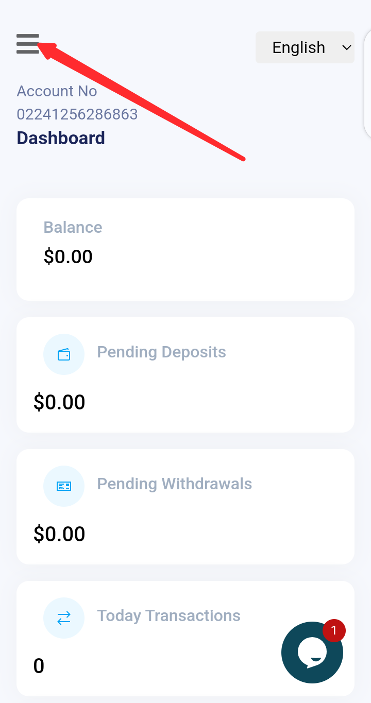
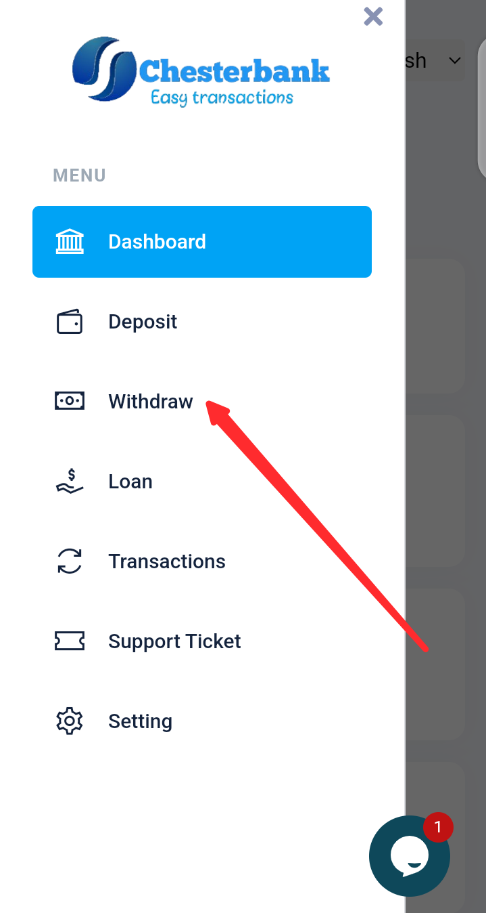
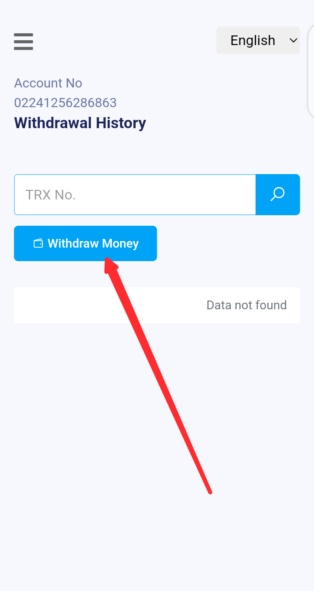
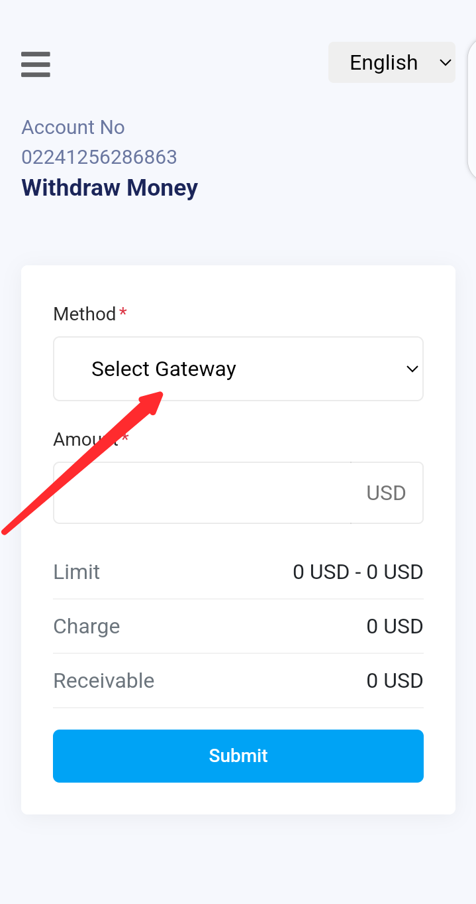
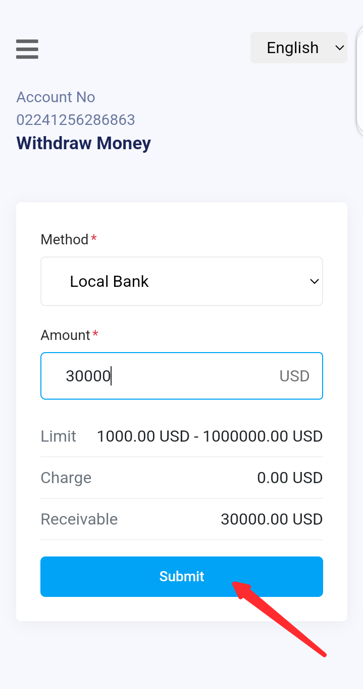
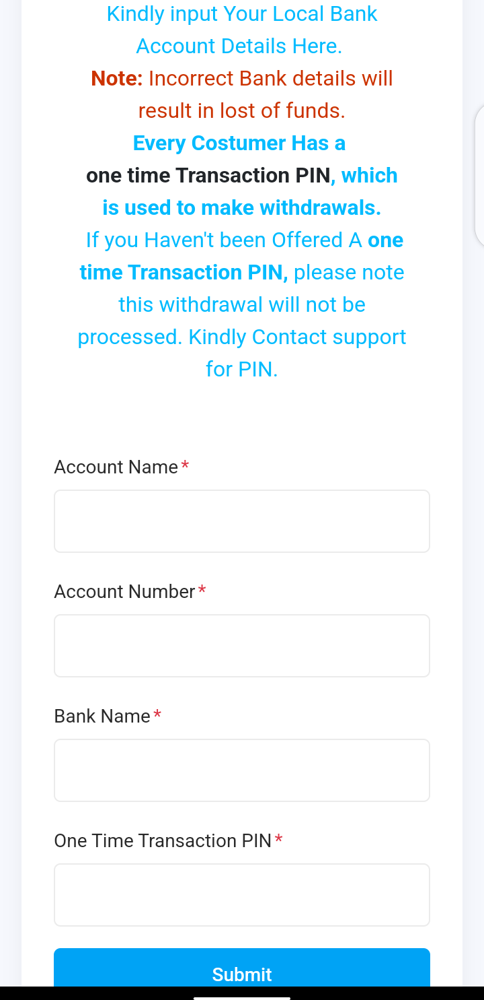

Step 1: Click Menu
To begin, open the Chesterbank mobile app and click on the menu icon.

Step 2: In the Menu, Click Withdraw
From the menu options, select the "Withdraw" option.

Step 3: Click Withdraw Money
On the withdrawal page, click the "Withdraw Money" button to proceed.

Step 4: Select Local Bank
From the drop-down menu, select "Local Bank" to specify your bank type.

Step 5: Input an Amount
Enter the amount you wish to withdraw in the provided field.

Step 6: Input Your Bank Details and Click Submit
Finally, fill in your bank details and click the "Submit" button to complete the process.
